Building (Tech Tree)
This technology tree deals primarily with the processing of wood, stone and dirt into more elaborate products.
Wood
This branch is unlocked through the tutorial by first talking to the bishop. Most woodwork is done at the workyard.
| Technology | Prerequisite tech | Cost | Unlocks | |
|---|---|---|---|---|
| The Concept of Wood | None | Talk to the bishop | Blueprint: Timber stockpile | |

|
Gathering: Small tree felling | |||
| Gathering: Wooden stick | ||||
| Sawing | The Concept of Wood | Blueprint: Sawhorse | ||
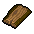 |
Create: Flitch | |||
| Create: Wood billet | ||||
| Firewood | Sawing | Blueprint: Chopping spot | ||

|
Create: Firewood | |||
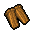 |
Create: Wood wedge | |||
| Woodcutter | Firewood |
|
Gathering: Big tree felling | |
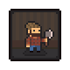 |
Perk: Axeman | |||
| Zombie woodcutting | Woodcutter | Talk to Gunter and dig up the buried zombie |

|
Create: Start building sawmill |
| Woodworking | Sawing | Blueprint: Carpenter's workbench | ||
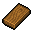 |
Create: Wooden plank | |||
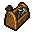 |
Create: Wood repair kit | |||
| Assembly Stand | Woodworking | Blueprint: Carpenter's workbench II | ||

|
Create: Jointing | |||
| Fine Woodworking | Assembly Stand | 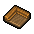 |
Create: Carved wood | |
| Circular Saw | Woodworking | Blueprint: Circular saw | ||
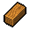 |
Create: Wooden beam | |||
| Tricks of the Trade | Circular Saw + Stone Carving |
Create: Prayer for excellence | ||
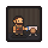 |
Perk: Carpenter | |||
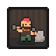 |
Perk: Mason | |||
Stone
This branch is unlocked through the tutorial by first talking to the bishop. Most stonework is done at the workyard.
| Technology | Prerequisite tech | Cost | Unlocks | |
|---|---|---|---|---|
| The Concept of Stone | None | Talk to the bishop | 
|
Blueprint: Stone stockpile |
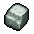 |
Gathering: Stone rock | |||
| Stoneworking | The Concept of Stone | 
|
Blueprint: Stone cutter | |
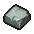 |
Create: A piece of stone | |||
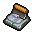 |
Create: Stone repair kit | |||
| Stone Carving | Stoneworking | 
|
Blueprint: Stone cutter II | |
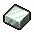 |
Create: A polished brick of stone | |||

|
Create: A carved piece of stone | |||
| Marble Quarrying | Stone Carving | 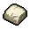 |
Create: A piece of marble | |
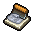 |
Create: Marble repair kit | |||
| Gathering: Big marble rock | ||||
| The Art of Stone | Marble Quarrying | Create: A polished brick of marble | ||
| Create: A carved piece of marble | ||||
| Zombie quarrying I | Stone Carving | Talk to Gunter and dig up the buried zombie |

|
Blueprint: Zombie stone quarry |
| Zombie quarrying II | Zombie quarrying I + Marble Quarrying |
Talk to Gunter and dig up the buried zombie |

|
Blueprint: Zombie marble quarry |
| Mining | The Concept of Stone | 
|
Blueprint: Iron ore stockpile | |
| Gathering: Coal | ||||
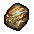 |
Gathering: Iron ore | |||
| Zombie mining | Mining | Talk to Gunter and dig up the buried zombie |

|
Blueprint: Zombie ore mine |
| Precious Metals | Mining | 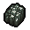 |
Gathering: Graphite | |
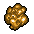 |
Gathering: Gold ore | |||
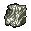 |
Gathering: Silver ore | |||
| Related Ore | Precious Metals | 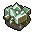 |
Gathering: Pyrite | |
| Gathering: Sulfur | ||||
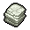 |
Gathering: Limestone | |||
| Scent of Gold | Related Ore | 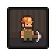 |
Perk: Miner | |
| Gems | Related Ore | Gathering: Diamond | ||
| Best Friend | Gems | 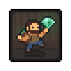 |
Perk: Jeweler | |
Clay
This branch is unlocked upon receiving the quest to make clay bowls for the bishop.
| Technology | Prerequisite tech | Cost | Unlocks | |
|---|---|---|---|---|
| The Concept of Dirt | None | Make clay bowls for the bishop | 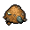 |
Gathering: Sand |
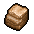 |
Gathering: Clay | |||
| Clay | The Concept of Dirt | Blueprint: Potter's wheel | ||
| Create: Ceramic bowls | ||||
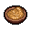 |
Create: Polishing paste | |||
| Ceramic Firing | Clay | Create: Ceramic jug | ||
| Create: Porcelain pitcher | ||||
| |||||